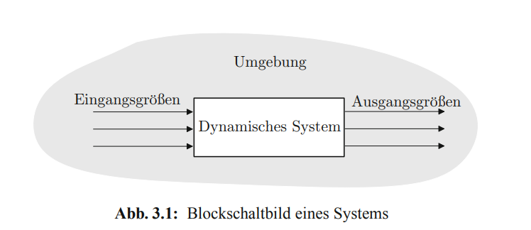
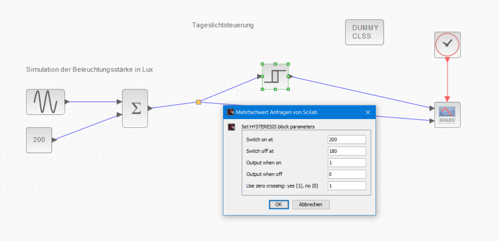

3.1 Blockschaltbild
Blockschaltbild

- Grafische Beschreibung von Systemen in der Regelungs- und Steuerungstechnik
- Systeme werden durch Blöcke dargestellt, die durch Pfeile verbunden sind
- z.B. Steuerungsfunktion (z.B. in Python)
- z.B. thermodynamisches Modell eines Raums
- I.d.R. beschäftigen wir uns mit dynamischen Systemen
- Die Ausgangsgröße hängt nicht nur von den Eingangsgrößen ab (vgl. Funktion)
- sondern auch vom Systemzustand und damit inneren Zustandsgrößen (vgl. Objekt)
Dynamische Systeme
- lineare Systeme: Systemfunktion ist eine lineare Funktion
- nichtlineare Systeme: Systemfunktion ist eine nichtlineare Funktion
- zeitinvariante Systeme: Systemfunktion ist unabhängig von der Zeit
- zeitvariante Systeme: Systemfunktion ist abhängig von der Zeit
- Totzeit: Systemfunktion ist eine Funktion der Zeit, die für \(t<0\) verschwindet
Elemente eines Blockschaltbildes
- Übertragungsglieder beschreiben Systeme mit deren Eigenschaften / Funktionen
- Pfeile die Ein- und Ausgangsgrößen
- Komplexe Systeme können durch mehrere Systeme zusammengesetzt werden
- Systeme werden im Zeitbereich durch ihre Funktionsbeziehung zwischen Ausgang \(y\) und Eingang \(u\) unterschieden \(f(u)=y\)
Proportionalglied (P-Glied)
- Linear und zeitinvariant
- Beschreibt Systeme mit direktem proportionaler Systemfunktion \(f\) für den Zusammenhang zwischen Eingang (\(u\)) und Ausgang (\(y\))
- \(y = f(u)=K_p \cdot u\)
- \(K_p\) ... Proportionalitätsfaktor

Wirkweise eines P-Glieds
- \(y = f(u)=K_p \cdot u\)
- Beispiel:
- je höher die \(\text{CO}_2\) Konzentration in einem Raum, desto schneller dreht sich ein Ventilator in einer Lüftungsanlage
- \(y\) ... Drehfrequenz der Ventilators in \(Hz\)
- \(u\) ... \(\text{CO}_2\) Konzentration in \(ppm\)
- \(K_p\) ... Proportionalitätsfaktor in \(\frac{Hz}{ppm}\)


- Unabhängig vom Verlauf der Eingangsgröße \(u(t)\) ist der Wert der Ausgangsgröße \(y(t)\) immer proportional
ü߆ Einheits-Sprungfunktion
- Eine Funktion, die am Zeitpunkt \(t=0\) von \(u=0\) auf \(u=1\) springt und sonst konstant bleibt
- beliebtes Werkzeug in die Regelungstechnik: Wie reagiert ein System, wenn wir eine Sprungfunktion an den Eingang legen (auch in der E-Technik!)

ü߆ Sprungantwort (Reaktion) eines P-Glieds auf eine Sprungfunktion

- Das Symbol repräsentiert die Sprungantwort
- weitere Beispiele:
- Entwicklung Spannungsabfall am Ohmschen Widerstand beim Anlegen einer Quellenspannung
- Antwort eines Helligkeitssensors auf Lichteinfall
Totzeitglied (T-Glied)
- beschreibt die zeitliche Verzögerung, bis ein System auf das Eingangssignal (z.B. der Sprungfunktion) reagiert.
- Nicht die Trägheit des Systems sondern eine Leerlaufzeit \(T_t\).

ü߆ Sprungantwort eines T-Glieds auf eine Sprungfunktion

✍️ Aufgabe 3_1_0: Proportional mit Totzeitglied
- Öffnen Sie Aufgaben\3_1_0 in scilab xcos
- Testen Sie verschiedene Werte für den P-Wert beim
PID-Block und die Totzeit beimContinuous fix delay-Block
Proportionalglied mit Verzögerung 1. Ordnung (PT1-Glied)
- beschreibt Trägheit im System oder eine Dämpfung
- nähert sich über die Zeit einer waagrechten Linie an
- z.B. Spannung am Kondensator
- z.B. Temperatur im Raum nach dem Einschalten einer Fußbodenheizung
- Beschränktes Wachstum
- Es gibt noch viele weitere typische Glieder
- Mehr dazu beim Thema stetige Regler
- aus diesen lassen sich komplexe Modelle zusammenstellen lassen (z.B. als Blockschaltbild)
Blockschaltbild einer Steuerung

- Die Führungsgröße ist die Größe, welche das Verhalten der Stellglieds bestimmt (\(\rightarrow\) z.B. die aktuelle Beleuchtungsstärke gemessen am Lichtsensor im Freien)
- Durch das Stellen eines Stellglieds (oder Stelleinrichtung bzw. Aktor) wird die Steuerstrecke beeinflusst (\(\rightarrow\) Mikrocotroller steuert Spannung an LED an oder aus basierend auf einen Schwellenwert)
{kind=link}
ü߆ Steuerung
- Stellgröße ist die Ausgangsgröße des Stellglieds (\(\rightarrow\) Spannung an der LED)
- Steuerstrecke ist das System, das durch die Stellgröße und Störgrößen beeinflusst wird (\(\rightarrow\) Helligkeit im Raum)
- Auf die Steuerstrecke wirken neben der Stellgröße aus Störgrößen (\(\rightarrow\) Lichteinfall von Außen, weitere nicht gesteuerte Lichtquellen im Raum)
Stellglied
- ist nun kein standardisiertes Glied, sondern hat eine spezielle Funktion die sich aus Hard- und Software ergibt
- diese beinhaltet Steuerungslogik
- und physikalische Umsetzung
- zeitliche Reaktion meist nicht unmittelbar, sondern verzögert (z.B. Rechenzeit als Totzeit)
def l_set(p_act, h_room, PAR_SETPT, l_man):
return (p_act and h_room<PAR_SETPT) or l_man
Steuerstrecke
- beschreibt die echte Welt
- häufig in vereinfachten Modellen
- zeitliche Reaktion meist nicht unmittelbar (z.B. PT1-Glied)
def beleuchtungsstraerke_raum_lux(lichtabgabe_led, lichteinfall_aussen, wand_farbe):
# Größe des Raumes
# Größe der Fenster
# Reflexion der Wände
<...>
return beleuchtungsstraerke_raum_lux
def raumtemperatur(heizleistung_in_w, aussen_temp_in_c):
# Temperatur im Zeitpunkt zuvor
# Trägheit der Temperaturänderung
# Größe des Raumes
# Isolation der Raumes
<...>
return raum_temp_in_c
Simulation mit scilab xcos
- Installieren Sie scilab xcos
- Xcos ist ein grafischer Editor für Blockschaltbilder
- die Funktionalität entspricht in etwa matlab simulink
- allerdings ist die Software open source und kostenlos

✍️ Aufgabe 3_1_1: Wassertank ohne Steuerung

✍️ Aufgabe 3_1_2: Einfache Tageslichtschaltung
- passen Sie den Threshold in
Dynamicin Aufgaben\3_1_2 so an, dass die LED bei einer Helligkeit von 220 Lux angeht
Zwei-Punkt Regelung
- Vorteile
- einfach zu verstehen
- und zu implementieren
regelabweichung = soll_lux- ist_lux
zweipunkt_regler(regelabweichung):
if regelabweichung > 0:
licht = True
else:
licht = False
return licht
Probleme Zwei-Punkt Regelung
- Nachteile bei zeitlich wenig trägen Systemen
- Regler schaltet ständig zwischen den Ausgangswerten
- kritisch insbesondere bei mechanische Belastung
- z.B. Motor wird ständig an und aus geschaltet
Hysterese
- bewirkt eine Schalttoleranz ober- und unterhalb des Sollwerts

def zweipunkt_hysterese(ist_lux, on_level, off_level, letzter_zustand):
if ist_lux > off_level:
licht = False
elif ist_lux < on_level:
licht = True
else:
licht = letzter_zustand
return licht
class zweipunkt_hysterese():
def __init__(self, on_level, off_level):
self.on_level = on_level
self.off_level = off_level
self.letzter_zustand = False
def calc_output(self, ist_lux):
if ist_lux > self.off_level:
self.letzter_zustand = False
elif ist_lux < self.on_level:
self.letzter_zustand = True
return self.letzter_zustand

{kind=link}

Drei-Punkt Regelung
- vermeidet ständiges Umschalten
- sinnvoll bei Neutralstellung z.B. Motoren
drei_punk_regler(abstand):
if abstand > 6:
fahre = "vorwärts"
elif abstand < 4:
fahre = "rückwärts"
else:
fahre = "nicht"
return fahre
bewegung = drei_punk_regler(abstand)
✍️ Aufgabe 3_1_3: Einfache Tageslichtschaltung
- Ersetzen Sie den Schalter
Dynamicmit einem Hystereseschalter
